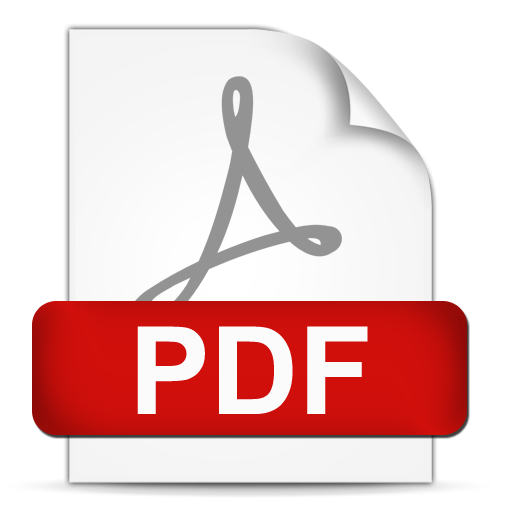

Please download the CNSM CFT flyer here: 
Tutorials are an integral part of the program of CNSM 2022. They provide participants with broad and comprehensive overviews of emerging fields in management of information, networks and communication technology. Experts are invited to submit half-day (3 hours) tutorial proposals. Full-day tutorials as well as tutorials including hands-on experience are also warmly welcome.
Tutorial Proposal Submission: May 16, 2022
Acceptance Notification: May 30, 2022
Camera Ready Abstract Due: September 16, 2022
Conference: 31 October - 4 November 2022
Suggested topics include, but are not limited to:
If you are interested in presenting a tutorial at CNSM 2022, please fill in the Tutorial Proposal Form and submit it to the Technical Program Co-Chairs.
Tutorial Proposal Form can be downloaded here 
Once accepted, a tutorial will be held provided that there is a minimum audience of 5 registrants for the tutorial. A stipend of 300 Euros or one free full conference registration will be offered for a half-day tutorial and 600 Euros or 300 Euros + free full registration for a full-day tutorial (to be shared among speakers for a particular tutorial if more than one speaker presents the tutorial). As for most conferences, travel and other expenses are to be covered by the tutorial speakers themselves. For further information, please contact the Tutorial Co-Chairs.
Marc-Oliver Pahl, IMT Atlantique, France: marc-oliver.pahl@imt-atlantique.fr
Ilias Sakellariou, University of Macedonia, Greece: iliass@uom.edu.gr